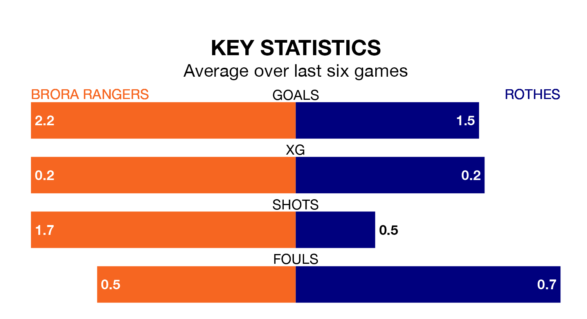

Struggling Brora Rangers face Rothes at Dudgeon Park on Saturday looking to build on a win in their last league outing.
After securing all three points with a 3-0 victory over Huntly on November 18, Brora sit bottom of Highland and Lowland Football Leagues.
They travel to play a Rothes side 17th in the standings, who were held in their last match, 4-4 against Huntly, on December 9.
Brora are in good form in Highland and Lowland Football Leagues, with four wins and two draws from their last six games.
With three wins and a draw over that period, Rothes's form is worse – they have taken 10 points from 18, compared to Rangers' 14.
In the last five years, Brora and Rothes have played each other on five occasions. Brora won all of them.
On average, Brora scored 2.2 goals and Rothes 0.2 in those matches.
Their last meeting was on August 5, when Brora won 1-0 away.
With 23 goals in 16 games so far this season, the visitors are the league's joint--2th-lowest scorers with 1.4 goals per game. But they are conceding fewer than average too, letting in 25 goals at a rate of 1.6 per game.
The home side, meanwhile, are above average scorers, with 1.8 goals per game, compared to a league average of 1.7. They have conceded 0.9 goals per game.
